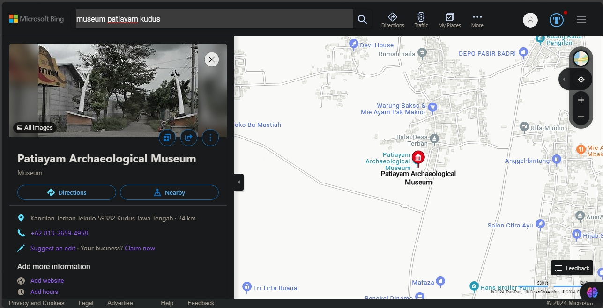
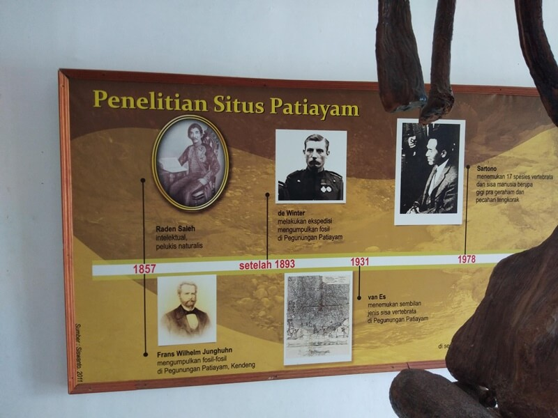

What is Museum Purbakala Patiayam Kudus?
Museum Purbakala Patiayam merupakan tempat wisata di Kudus yang menyimpan beberapa artefak berupa tulang-tulang hewan purbakala. Bukan hanya itu, di museum bersejarah ini pun kamu dapat menemukan manusia purba (Homo Erectus).
Peninggalan Situs Purbakala Patiayam merupakan situs bersejarah terlengkap di Kudus karena penemuan-penemuan yang ada mencapai lebih dari 1.000 fosil.
Where is Museum Purbakala Patiayam Kudus located?

It is located at Kancilan, Terban, Jekulo, Kudus, Central Java, Indonesia
The image above will give you a clear and precise location
How much does it cost to visit Museum Purbakala Patiayam Kudus?
It costs about Rp5.000 IDR for each 1 person
What is the operational hour for Museum Purbakala Patiayam Kudus?
It is always open at Monday to Sunday, it opens at 8.00 and closes at 16.00
Di dalam Museum Situs Purbakala Patiayam tersimpan dengan apik beberapa peninggalan purbakala, seperti tulang gajah purba, gading gajah dengan ukuran yang sangat besar.
Di dalam Museum Situs Purbakala Patiayam juga tersedia beberapa alat batu, yang digunakan pada zaman dulu. Untuk memudahkan mereka dalam menjalankan kehidupan sehari-hari
Secara garis besar, koleksi dari Museum Situs Purbakala Patiayam terdiri dari:
fosil hewan laut
fosil hewan purba
tanduk gajah (elephantidae)
Sekilas mungkin nama tempat wisata sejarah yang satu ini sangat unik. Konon katanya asal-usul Patiayam secara morfologi merupakan sebuah kubah dimana puncak tertingginya berada di ketinggian sekitar 350 mdpl.
Dan merupakan bagian daripada Gunung Muria, dimana luasnya hampir mencapai 3 ribu hektar. Penemuan di Situs Patiayam sendiri sudah berlangsung sejak Indonesia belum merdeka.
Ditemukan pertama kali sekitar tahun 1857 oleh Frans Wilhelm Junghuhn dan Raden Saleh. Dimana mereka menemukan tulang belulang dengan ukuran yang besar.

informasi penelitian situs patiayam
Secara Fisiogafi Situs Purbakala Patiayam berada di Zona Gunung Berapi krater dan zona daratan Alluvial Jawa Utara, oleh karena itu daerah ini merupakan daerah perbukitan dan daerah daratan